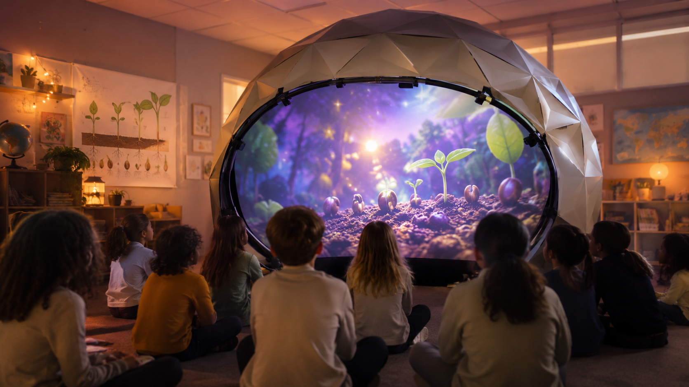

Governança e gestão
O projeto prevê definição de responsabilidades, registro de decisões, cronograma, orçamento, inventário, indicadores e acompanhamento de resultados por meio do sistema digital de produção da Cooperativa.
Proposta cooperativa em desenvolvimento · estudo técnico preliminar
Solução itinerante para educação, ciência, acessibilidade, cultura digital e cooperativismo
Versão em desenvolvimento para avaliação institucional e possível apresentação ao SESCOOP/MG e ao Sistema Ocemg
A cúpula audiovisual geodésica aberta é uma proposta de experiência imersiva que integra projeção, som espacial, ciência, astronomia, acessibilidade e educação cooperativista. A estrutura móvel está sendo planejada para circular por escolas, comunidades, cooperativas, centros culturais e municípios.

A proposta poderá ser apresentada ao SESCOOP/MG como possibilidade de programa de educação, formação e promoção social, divulgação do cooperativismo, democratização do acesso à ciência e à cultura e desenvolvimento de trabalho técnico para cooperados.
Esta página apresenta um estudo técnico e conceitual. Não representa aprovação, contratação ou compromisso financeiro por parte do SESCOOP/MG.
A Cooperativa dos Empreendedores de Belo Horizonte é apresentada nesta proposta como instituição proponente e ambiente de articulação, gestão e desenvolvimento coletivo do projeto.
Formação, geração de trabalho, inovação e impacto comunitário
A proposta da cúpula audiovisual geodésica aberta não é apresentada apenas como a construção de um equipamento. Ela está sendo concebida como uma plataforma estratégica da Cooperativa dos Empreendedores de Belo Horizonte, capaz de reunir conhecimentos técnicos, produção cultural, educação, inovação, comunicação e prestação de serviços.
A iniciativa nasce de uma articulação institucional e do interesse da Cooperativa em estudar caminhos para seu desenvolvimento. Sua construção pretende contar com a participação de cooperados, valorizar competências existentes e criar oportunidades de formação, trabalho, comercialização de serviços e atuação junto a escolas, instituições, cooperativas e comunidades.
A estrutura audiovisual poderá funcionar como uma unidade cooperativa de produção, circulação e formação, buscando resultados econômicos, culturais, educacionais e sociais continuados. Sua implantação depende de validação técnica, planejamento, orçamento e decisão institucional.
O projeto prevê definição de responsabilidades, registro de decisões, cronograma, orçamento, inventário, indicadores e acompanhamento de resultados por meio do sistema digital de produção da Cooperativa.
A implantação poderá gerar formação para cooperados em montagem, operação audiovisual, sonorização, projeção, mediação educativa, manutenção, logística, comunicação e gestão de eventos.
A operação poderá mobilizar cooperados de diferentes áreas e criar frentes de atuação técnica, artística, administrativa, educativa, logística e de comunicação.
A estrutura poderá atender escolas, eventos cooperativistas, secretarias públicas, centros culturais, universidades, feiras, museus, empresas e organizações comunitárias.
A cúpula também poderá funcionar como ferramenta móvel de comunicação institucional, apresentando conteúdos sobre cooperativismo, desenvolvimento local, sustentabilidade e impacto social.
O projeto será orientado por modularidade, reparabilidade, uso eficiente de recursos, redução de resíduos, planejamento logístico e possível integração com ações ambientais e cooperativas de reciclagem.
Sessões, públicos, custos, resultados, avaliações e registros técnicos poderão ser documentados para apoiar decisões futuras e qualificar a prestação de contas do projeto.
A proposta será desenvolvida de forma colaborativa, buscando integrar cooperados com experiência em audiovisual, produção cultural, educação, gestão, direito, comunicação, logística, design, manutenção e outras áreas compatíveis.
A participação deverá ocorrer com funções, responsabilidades, formas de contratação e critérios de remuneração definidos pela Cooperativa, respeitando sua governança, seu estatuto e as normas aplicáveis.
O desenvolvimento da proposta considera as prioridades apresentadas pelo Sistema OCB para o ciclo 2025–2030, especialmente o fortalecimento da governança e da gestão, a formação profissional, a geração de dados, a ampliação de mercados, a comunicação dos benefícios do cooperativismo e a integração de práticas de sustentabilidade.
Modelo em definição: a operação definitiva dependerá da aprovação da diretoria, da análise jurídica, do planejamento financeiro e da definição das responsabilidades entre a Cooperativa e os cooperados envolvidos.
Os resultados a seguir representam objetivos e potenciais a serem avaliados durante o desenvolvimento; não constituem garantias de execução ou retorno.
| Dimensão | Indicador preliminar |
|---|---|
| Formação | Número de cooperados capacitados |
| Trabalho | Número de cooperados contratados por ação |
| Circulação | Número de escolas ou instituições atendidas |
| Público | Número de participantes |
| Conteúdo | Número de experiências audiovisuais desenvolvidas |
| Mercado | Número de propostas e contratos realizados |
| Comunicação | Alcance dos registros e divulgações |
| Sustentabilidade | Materiais reutilizados, reparados ou reciclados |
| Qualidade | Avaliação de público, parceiros e equipe |
| Governança | Percentual de atividades registradas e acompanhadas |
Os indicadores definitivos deverão ser definidos coletivamente e ajustados ao modelo de operação aprovado.
Mais do que transportar uma cúpula, a proposta busca transportar conhecimento, formação, cultura e oportunidades por meio da cooperação.
Conhecer a estratégia de implementaçãoA programação poderá combinar narrativas audiovisuais, paisagens sonoras, conteúdos científicos e atividades participativas, mantendo a escuta, a acessibilidade e a mediação educativa como princípios de concepção.
Cada conteúdo deverá ser desenvolvido ou licenciado de acordo com o público, os objetivos pedagógicos e as condições técnicas de circulação.
Relacionar investigação, narrativa e observação.
Aproximar fenômenos do céu da experiência cotidiana.
Estimular atenção aos ecossistemas e à interdependência.
Articular colaboração, comunidade e ação coletiva.
Construir uma experiência multissensorial desde a concepção.
Chegar a escolas, comunidades e municípios.
Desenvolver trabalho artístico, pedagógico e técnico.
Pesquisar projeção imersiva e som espacial.
A definição entre cúpula inflável, estrutura geodésica ou solução híbrida dependerá de testes de montagem, segurança, acústica, projeção, transporte, custos, capacidade de público e exigências de cada local.
Diâmetro Altura Distância de projeção Brilho Resolução Lente Sistema de mídia Capacidade de público
Reprodução estéreo, duas caixas e operação simples.
Quatro caixas, quadrifonia ao redor do público e subwoofer opcional.
Seis ou oito caixas compactas, desenho multicanal, subwoofer, interface multicanal e reprodução por REAPER ou equivalente.
A sonorização deverá priorizar inteligibilidade da narrativa, segurança auditiva, distribuição uniforme, baixo peso, montagem rápida, cabeamento organizado, proteção dos equipamentos e operação por equipe treinada.
| Sistema | Potência estimada | Quantidade | Consumo total | Observações |
|---|---|---|---|---|
| Projetor | A definir | 1 | A definir | Depende da configuração |
| Computador | A definir | 1 | A definir | Reprodução audiovisual |
| Áudio | A definir | A definir | A definir | Amplificação e caixas |
| Ventilação | A definir | A definir | A definir | Essencial na cúpula inflável |
| Iluminação técnica | A definir | A definir | A definir | Montagem e emergência |
| Equipamentos auxiliares | A definir | A definir | A definir | Rede, sensores e controle |
Indicadores pendentes: equipe mínima; tempos de montagem e desmontagem; sessões diárias e intervalos; capacidade por sessão; acessibilidade; plano de emergência; responsável técnico.
A estrutura será desenvolvida a partir de uma restrição logística objetiva: todo o conjunto desmontado deverá caber em um veículo utilitário leve, como uma Fiorino, sem necessidade de reboque. Barras segmentadas, revestimentos dobráveis, cases identificados e equipamentos compactos permitirão transportar a cúpula, o sistema de projeção, a sonorização, o rack técnico e os acessórios de montagem de forma organizada e segura.
Dimensionamento pendente: a distribuição definitiva dos volumes dependerá do levantamento das dimensões internas, capacidade de carga e pontos de amarração do veículo utilizado.
Cases, caixas plásticas, carrinhos, identificação de cabos, inventário, proteção contra impacto e umidade.
Armazenamento da estrutura e superfície de projeção; transporte de projetores e caixas; veículo, peso e volume totais; manutenção preventiva.
| Módulo | Conteúdo | Tipo de embalagem | Peso | Volume | Responsável |
|---|---|---|---|---|---|
| Estrutura | A definir | Case ou bolsa técnica | A definir | A definir | A definir |
| Projeção | Projetor, lente e acessórios | Case rígido | A definir | A definir | A definir |
| Áudio | Caixas, amplificação e interface | Cases | A definir | A definir | A definir |
| Energia | Quadro, cabos e extensões | Caixa técnica | A definir | A definir | A definir |
| Controle | Computador e periféricos | Case acolchoado | A definir | A definir | A definir |
| Acessibilidade | Recursos táteis e materiais | Caixa identificada | A definir | A definir | A definir |
A etapa inicial poderá utilizar estrutura temporária ou alugada em cinco a dez ações, com escolas ou espaços parceiros, público controlado, coleta de dados e registro audiovisual. O ciclo deverá contemplar avaliações técnica, pedagógica e de acessibilidade, relatório final e revisão antes de qualquer aquisição definitiva.
Número de sessões e participantes; escolas e municípios atendidos; participação de professores; satisfação do público.
Falhas técnicas; tempo de montagem; consumo de energia; custos por sessão; acessibilidade; possibilidade de replicação.
Estrutura alugada ou simplificada para validação.
Estrutura própria, projeção fulldome e áudio espacial.
Unidade completa, conteúdos diversos, calendário estadual e integração com cooperativas parceiras.
Orçamento em elaboração Cotação pendente Definição técnica pendente Responsabilidade patrimonial a definir Modelo de contratação a definir
Como possibilidades de articulação — sem garantia ou compromisso — consideram-se contratação de programa educacional ou de sessões, apoio ao projeto-piloto e à circulação, formação de cooperados, promoção social, parceria com cooperativas, conexão com cooperativas de crédito e apoio à estruturação e avaliação.
Uma estrutura itinerante para experiências imersivas de arte, ciência, educação e som espacial
A proposta consiste em uma cúpula geodésica parcial, inclinada e aberta frontalmente, utilizada como superfície de projeção imersiva. Diferentemente de um planetário fechado, o público permanece sentado diante da estrutura, permitindo atender uma turma escolar completa com maior conforto, ventilação, acessibilidade e controle pedagógico.
O sistema foi pensado para circular por escolas, cooperativas, centros culturais, auditórios e espaços comunitários, reunindo projeção audiovisual, sonorização multicanal, conteúdos educativos e experiências de cultura digital.
| Elemento | Dimensão preliminar |
|---|---|
| Largura da abertura | entre 3,5 m e 4,5 m |
| Altura total | entre 2,5 m e 3,2 m |
| Profundidade | entre 1,8 m e 2,5 m |
| Inclinação aproximada | entre 25° e 45° |
| Capacidade de público | entre 30 e 40 alunos |
| Distância da primeira fileira | entre 1,5 m e 2 m |
| Distância da última fileira | entre 5 m e 7 m |
Referências preliminares: as medidas dependem de testes de projeção e segurança, do pé-direito e das dimensões dos espaços de circulação.
O protótipo inicial poderá utilizar um projetor e espelho convexo, com a estrutura preparada para atualização futura.
A estrutura aberta complementa as possibilidades de um planetário fechado e pode se adaptar melhor a determinados ambientes escolares.
A cúpula poderá reunir experiências sonoras imersivas, narrativas acessíveis, projeções de ambientes naturais, ações educativas e oficinas. A proposta busca integrar arte, tecnologia, inclusão e sustentabilidade e permitir o desenvolvimento de conteúdos específicos para escolas, cooperativas e comunidades.
A cúpula audiovisual geodésica aberta poderá se tornar uma estrutura modular de circulação, formação e experimentação, conectando escolas, cooperativas, artistas, educadores, técnicos e comunidades por meio da arte, da ciência e da cultura digital.
Conhecer a proposta técnica